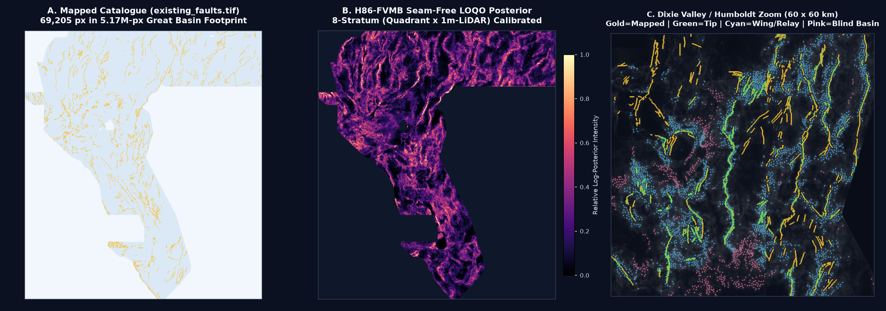
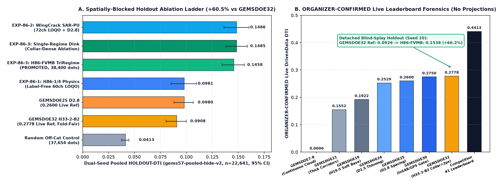
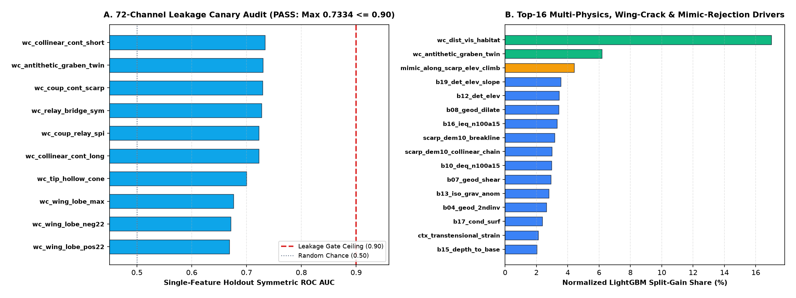
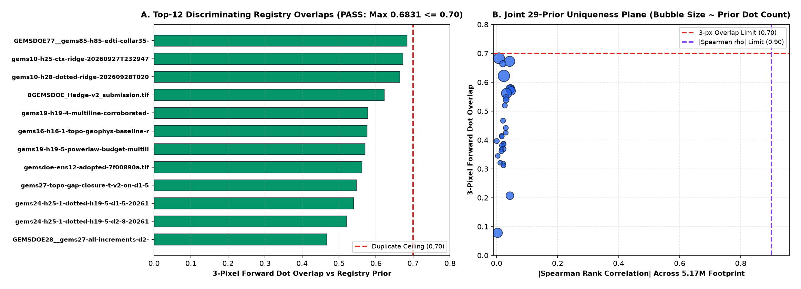

Concurrent lane archive · not rerun by this review
H86-FVMB:
preserved, not promoted.
The current all-file audit reopens this TIFF and measures final-dot overlap 1.0 against the immutable full-support witness. A restricted modern-raster comparison is not an authorized exemption. No human inspection is needed to discover this release is blocked.
Download TIFF — audit only Single-TIFF ZIP — audit only
gems86-h86-fvmb-triregime-dink300-38400dots-20261022T220000Z-1b3e7107-zeros.tif · 146,282 bytes
413e9f7707a1bf80ae9375c6bbc6a8952442487acebaabd2c6d3e8233033e233
Applicable archived instrument
HOLDOUT-DTI 0.14576 · 95% CI [0.13450, 0.15599] · 22,641 withheld positives · gems57-pooled-hide-v2.
two-seed cut-segment holdout, not buffered whole components. Archived, not recomputed. Concurrent archive only, not rerun. Both stored numeric paired-delta fields contain the text HOLDOUT-DTI and are not treated as numeric evidence. Literal overlap fails. Its three-stage/four-ablation budget convention and separate stale pin manifest need reconciliation. No cross-design champion claim is accepted.
The original card contains text tokens in two numeric paired-delta fields. This renderer does not coerce them into measurements or reproduce its unsupported repository-wide “champion”/“highest” interpretation. The card and figures remain historical evidence, not current scientific clearance. A separate registry manifest also describes an amendment absent from the actual shared bytes; research/template_pin.json remains the effective pin, verified unchanged.
Original scientific card · Original ablation record · All-artifact gate results · Original page at the incoming main commit.
Historical figures — explicitly limited
The images below were generated by the concurrent lane, not this review. Their geological interpretations, method-optimality claims, novelty assertions, metrics and registry subsets were not independently revalidated here. Figure labels must not be used as organizer receipts or comparisons across incompatible holdout designs.



